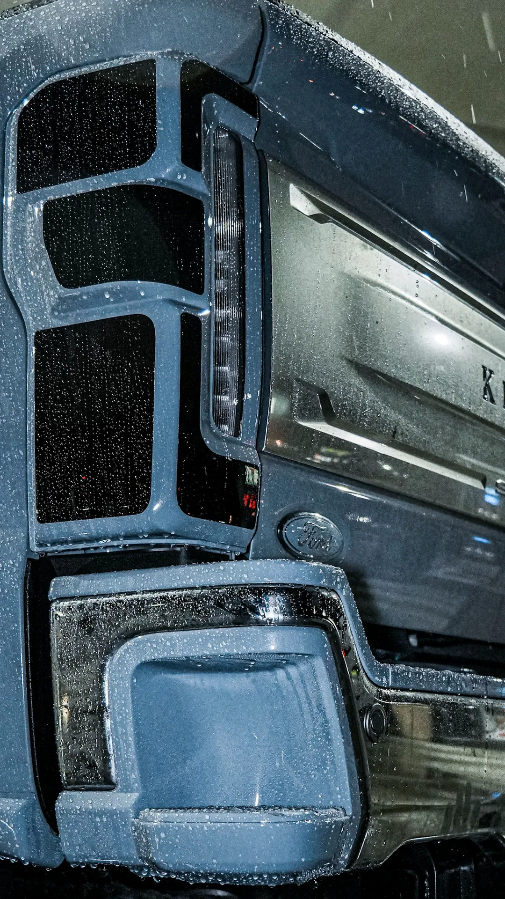

Your car or truck, filmed properly.
Rolling shots, stationary films, detail work and photography for builds, daily drivers, show vehicles and everything in between. Planned around your vehicle, shot in the right light and edited by me.

What I shoot
Pick one or combine them. Most shoots mix a few of these, and we'll figure out the right plan together.
Cinematic vehicle videos
A finished, edited film of your vehicle with music and sound, built for social and to keep.
Rolling footage
Your vehicle moving, filmed from another vehicle. The shots that show stance, wheels and presence.
Stationary films
Walkarounds and hero shots of the vehicle parked in a location that suits it.
Automotive photography
Edited photo sets: hero frames, angles and details, ready to post or print.
Detail-focused shoots
Close coverage of the parts that matter: wheels, badges, lighting, interiors and build work.
Custom projects
Build series, shop features, events or something else you have in mind. Tell me the idea.
Styles I shoot
Nothing here yet.
How it works
Send a request with your vehicle and the kind of shoot you want. Before shoot day we'll talk through the location, the time of day and the look you're after.
- Send your requestYour vehicle, the shoot type, a location, and a preferred and backup date.
- We talk it throughI'll contact you to plan the shoot and answer any questions.
- Custom quoteBased on what we're shooting, what you're getting and where. Agreed before anything is booked.
- Deposit confirms the dateOnce the deposit invoice is paid and the date is approved, you're booked.
Let's plan your shoot.
Tell me about your vehicle and what you have in mind.